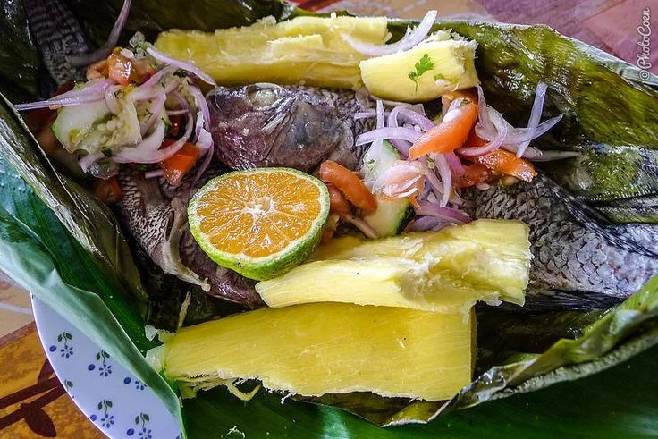
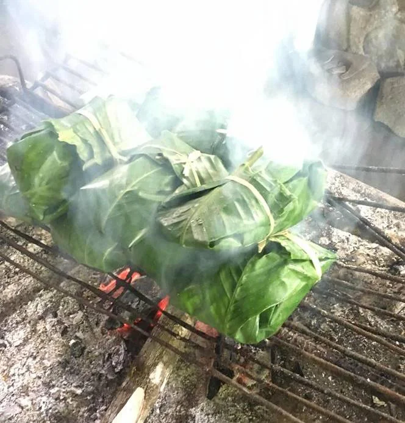
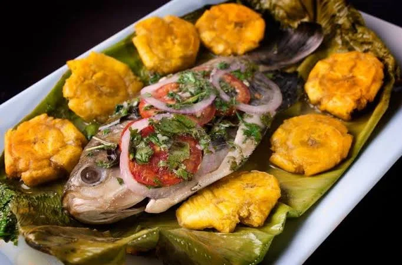

Sobre la experiencia
Conoce el lugar
El maito de pescado es una preparación tradicional de la Amazonía en la que el pescado se cocina envuelto en hojas, utilizando técnicas que conservan sus sabores y aromas. El plato forma parte de las expresiones gastronómicas relacionadas con los productos disponibles en el territorio.
Además de su sabor, el maito permite conocer cómo los ingredientes locales y las técnicas tradicionales hacen parte de la cultura alimentaria de la región. Es una preparación especialmente interesante para quienes desean conocer el Putumayo a través de su gastronomía.


Información para visitantes.